Grafana Guide: Explore Logs and Traces
|
This content was generated with the assistance of AI and should be verified against the official documentation before being relied on in production. |
Checked on 2026-11-11 against Grafana 13.3.x.
What you build
You read the logs of the Bookshelf service in Explore with the Loki data source. You narrow them with a line filter and a JSON parser, turn them into a metric, follow them live, open the trace that belongs to a log line in Tempo, find failed requests with a TraceQL query, and finish with the Logs app of Drilldown, which does the same exploration with clicks instead of queries.
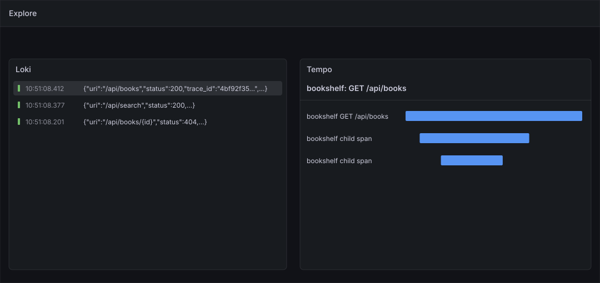
Before you start
-
Start the Grafana profile of the hands-on lab and wait about a minute:
cd lab docker compose --profile grafana up -d -
Open http://localhost:3000, sign in as
adminwith the passwordadmin, and click Skip when Grafana 13.3 asks you to update the default password. -
Do the previous guide, Explore metrics, first. It introduces the Explore page, the toolbar and the Builder / Code switch that this guide uses again.
-
The data sources Loki and Tempo are provisioned by the lab, so there is nothing to add. Use the data source called Loki: it has the Trace link that step 20 follows. A Loki data source that you created yourself in the data-source guide has that link only if you added the derived field
trace_idto it. -
The load generator sends traffic to the Bookshelf service in its default mode, which writes log lines and traces for every request.
-
The guide was checked on Grafana Enterprise 13.3.0 (the free image, no licence key). Reading logs and traces needs the Viewer role;
adminhas it. -
The figures are drawings of the Grafana 13.3 user interface, not screenshots, so small details can differ from your screen. A highlighted box with a number marks the control of the step with the same number. Where this guide could not open a screen in the lab, the figure and the step name the control and do not describe its exact layout.
Steps
The Bookshelf log lines are JSON texts with the fields timestamp, level, logger, message, application, uri, status,
trace_id and span_id, and they carry the stream labels application, job, service_name, detected_level and filename. The
stream that this guide reads is {application="bookshelf"}. The screen of Explore is described in the screen map of the
Explore metrics guide; the toolbar is the same here, with the data source Loki or Tempo chosen.
Open Explore and choose Loki
-
In the left navigation, click Explore.
-
Open the data source picker at the top left of the toolbar and click Loki.
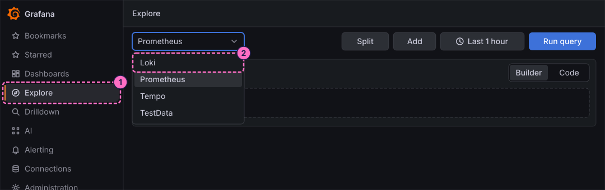
Select the log stream
-
In query A, click Code in the Builder / Code switch. The Builder lets you pick labels from lists instead; this guide types the queries.
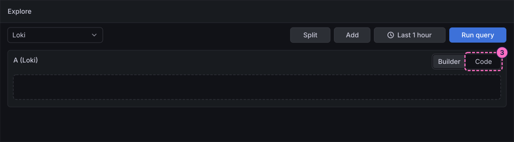
-
Click inside the query editor first, so that it has the focus, then type the stream selector. The label browser of the editor lists the available labels (
application,job,service_name,detected_levelandfilename) if you prefer to pick the value ofapplicationinstead of typing it:{application="bookshelf"} -
Click Run query in the toolbar.
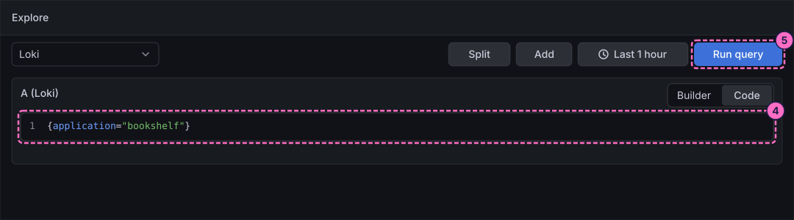
-
Below the query a chart of the log volume and the list of log lines appear. Click one log line to expand it: its fields
level,uri,status,trace_idandspan_idare listed.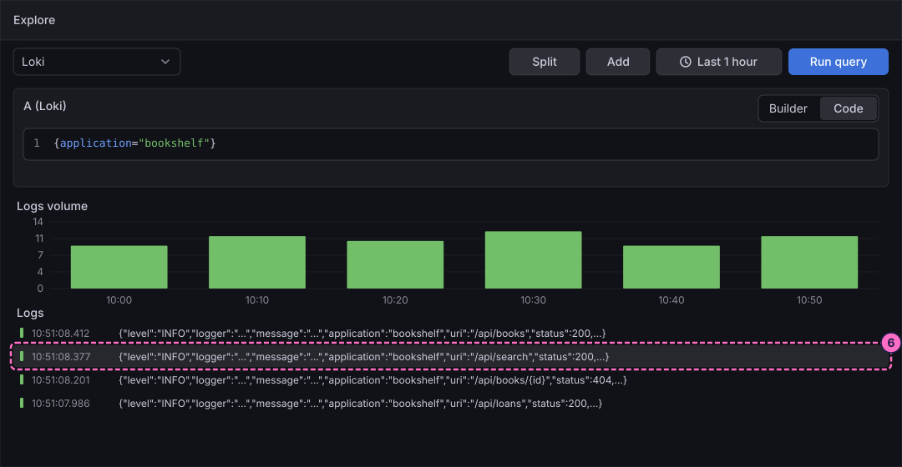
Filter and parse the lines
-
Click in the editor, select all with Ctrl+A (Cmd+A on macOS) and type a query with a line filter, which keeps only the lines that contain a text:
{application="bookshelf"} |= "/api/search" -
Click Run query. Only the lines of the route
/api/searchremain.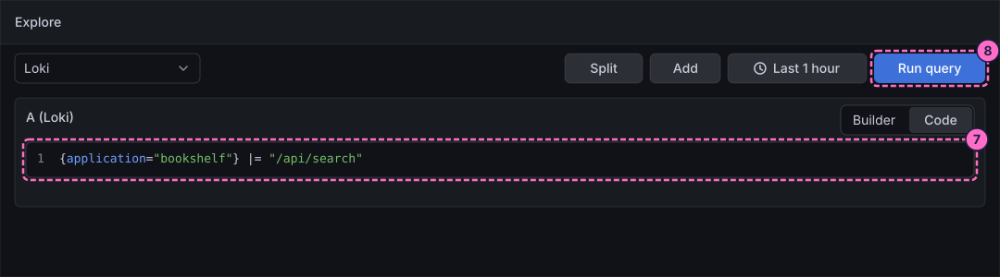
-
Select all again and type a query that parses the JSON body with
jsonand filters on the extracted fieldstatus:{application="bookshelf"} | json | status >= 400 -
Click Run query. The lines with a status of 400 or more remain; in the normal traffic mode these are the
404answers.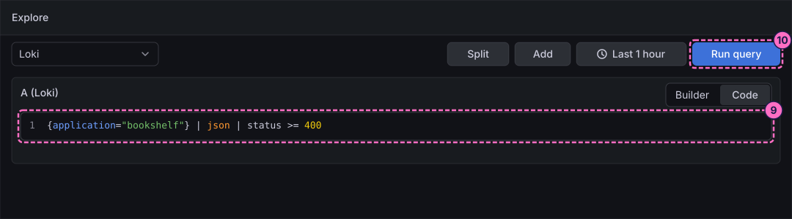
Follow the lines with Live
-
With the query of step 9 still in place, click Live in the toolbar. New lines are added to the list as they arrive.
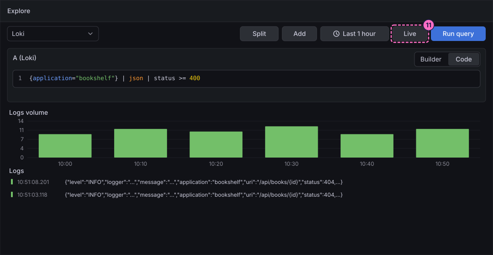
-
In a terminal, make the Bookshelf service fail, and watch lines with a status of
500appear:curl -X POST localhost:8090/mode/failing -
Stop the live view with the stop control that the toolbar shows while Live runs, and restore normal traffic:
curl -X POST localhost:8090/mode/normal
Count the lines as a metric
-
Click in the editor, select all and type a metric query, which counts the lines per status over one minute:
sum by (status) (count_over_time({application="bookshelf"} | json [1m])) -
Click Run query.
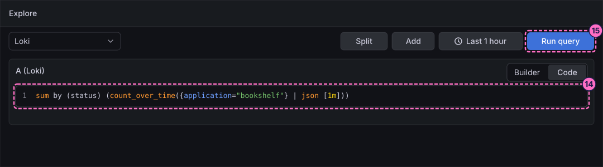
-
A Graph panel replaces the list of lines, with one line per status. Above it, click Bars in the display switch.
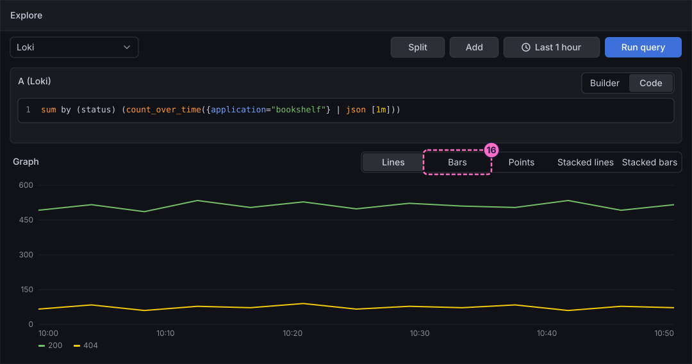
Jump from a log line to a trace
-
Select all in the editor and type the stream selector again:
{application="bookshelf"} -
Click Run query.
-
Click a log line to expand it.
-
Next to the field
trace_id, click the Trace button. It is the derived field of the provisioned Loki data source; Grafana opens the trace with that identifier in Tempo next to the logs, as in the figure at the top of this guide.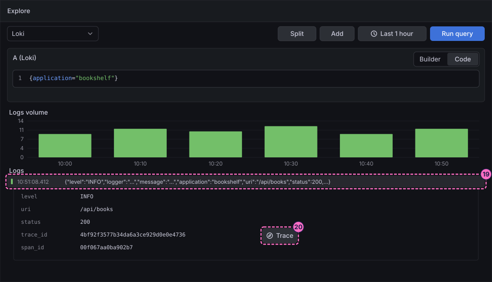
Search traces with TraceQL
-
Open the data source picker again and click Tempo.
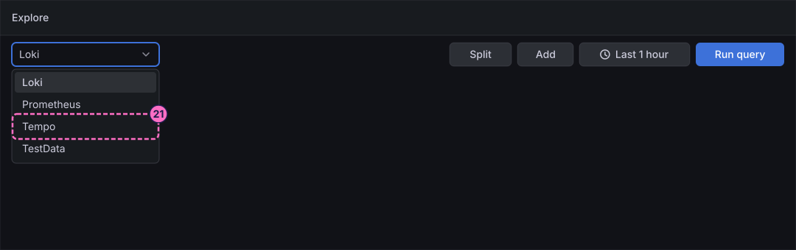
-
In the Tempo query editor, choose the query type TraceQL. The editor can search in other ways too; this guide uses TraceQL.
-
Click in the editor and type a TraceQL query, which selects the traces of the service
bookshelfthat contain a span with the statuserror:{ resource.service.name = "bookshelf" && status = error } -
Click Run query.
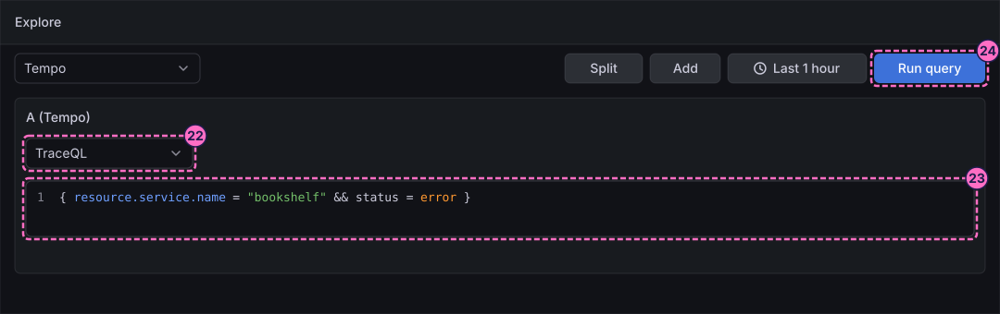
-
Click a trace of the result list to open it. If the list is empty, no request has failed in the last hour: run
curl -X POST localhost:8090/mode/failing, wait a minute, run the query again and restoremode/normalafterwards.
Explore the logs with Drilldown
-
In the left navigation, click Drilldown, then Logs. It opens the app Logs Drilldown in the page
/a/grafana-lokiexplore-app/explore.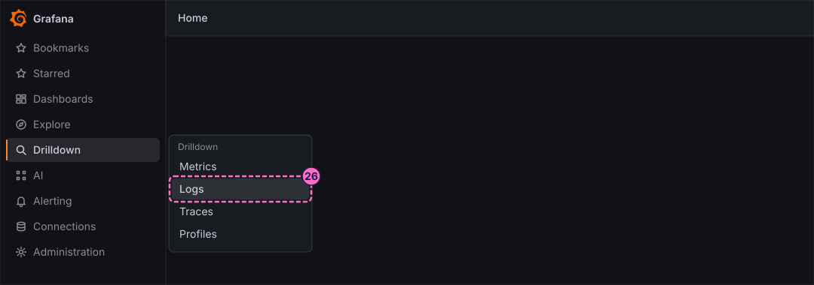
-
In the list on the tab service, click Show logs on the row bookshelf. The app shows the logs of the service with a volume chart and the values of the labels, without a query to type.
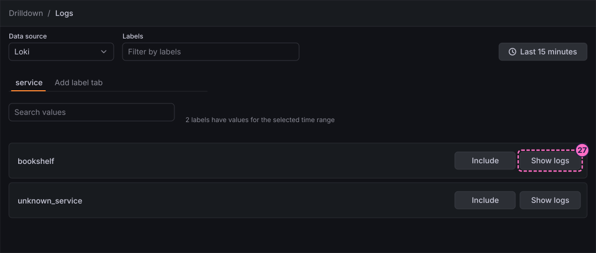
Check the result
-
In Explore with Loki, the query
{application="bookshelf"}lists log lines, and the query of step 14 draws one line for200and one for404. -
A log line that carries a
trace_idshows the Trace button, and the button opens the trace of that request in Tempo, with the root spanGET /api/booksfor a request to that route. -
Drilldown → Logs lists the service
bookshelfon the tab service.
To produce failed requests and error logs, use the load generator, and restore normal traffic afterwards:
curl -X POST localhost:8090/mode/failing
curl -X POST localhost:8090/mode/log-errors
curl -X POST localhost:8090/mode/normalcurl localhost:8090/ shows the current mode.
Variations
-
Query the stream with
{service_name="bookshelf"}or{job="bookshelf"}: the three selectors address the same lines in this lab. -
Open Explore with Prometheus in one pane and Loki in a second pane with Split, and compare the request rate with the log volume over the same time range.
-
Start from a trace: in Tempo open a trace, then use the link of a span to the logs of the service if the data source is configured for it.
What can go wrong
| Symptom | Cause | Fix |
|---|---|---|
The query returns No data |
The time range is too short or the lab started less than a minute ago, or the load generator is stopped. |
Widen the time range, wait a minute, and check the mode with |
The query fails with a parse error |
The text was typed before the editor had the focus, or the old query was not replaced completely. |
Click in the editor, select all with Ctrl+A (Cmd+A on macOS), and type the query again. |
There is no Trace button next to |
The data source is not the provisioned Loki, which has the derived field |
Choose the data source Loki, or add the derived field in the settings of your Loki data source as the data-source guide shows. |
The TraceQL query returns no trace |
No span with the status |
Send |
Drilldown → Logs opens a different Loki data source |
The app uses the first Loki data source in alphabetical order. |
Open the Data source control at the top of the app and choose Loki. |
Clean up
The guide creates nothing that Grafana stores, so there is nothing to remove. Make sure the load generator is back to curl -X POST localhost:8090/mode/normal.
To stop the lab, run docker compose --profile grafana down.
Where to go next
-
Previous guide: Explore metrics.
-
Next guide: Create a dashboard and the first panel, which turns a query into a saved panel.
-
Reference: Queries, Explore and Drilldown for the query editors and Drilldown, and Logs, traces and special visualizations for the panels that show logs and traces on a dashboard.